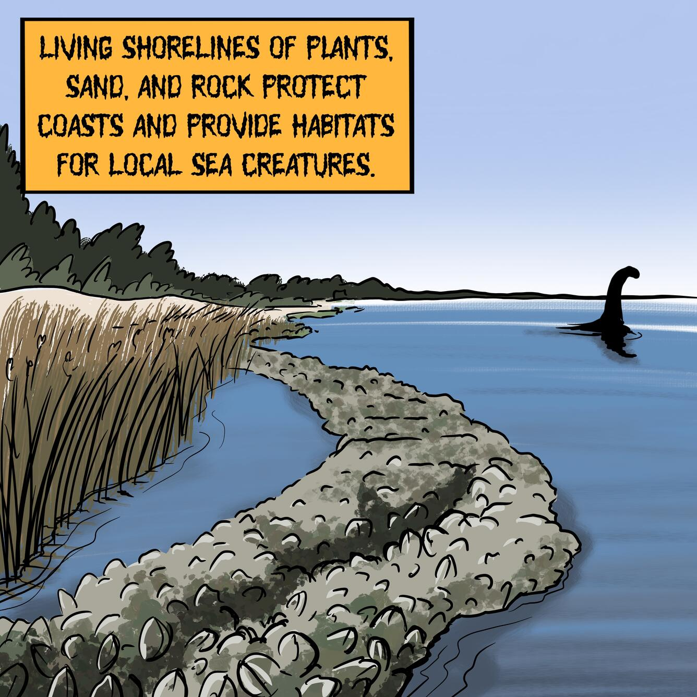

Keep the adventure going! Here, you’ll find a collection of kid-friendly websites, cool facts, and fun videos that help you learn all about mysterious creatures from around the world. Whether you want to discover how legends began, explore famous sightings, or watch exciting animations, this page will guide you to safe, curious-minded resources.
Learn about ecosystems and
the environment through folklore.
This page
dives into a playful and
spooky side of science: illustrations that
pair
famous cryptids with real-world climate
change challenges. Click on the picture!
